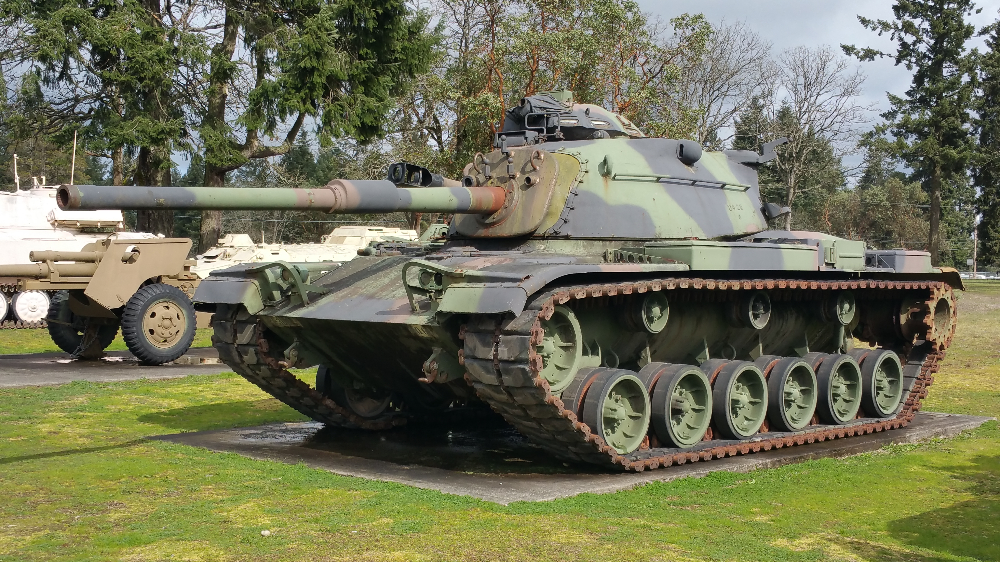

M60 Patton
Призначення: перший офіційний "основний бойовий танк" (MBT) США. Країна: США. Роки виробництва: 1959-1987. Експлуатація: 1960-до сьогодні (у багатьох країнах). Кількість: ~15 000 шт. Озброєння: 105-мм нарізна гармата M68, 1 × 7,62-мм кулемет, 1 × 12,7-мм кулемет M2. Броня: до 155 мм (лоб корпусу), до 254 мм (башта на пізніх версіях). Маневреність: 48 км/год, дизельний двигун Continental AVDS-1790-2. Екіпаж: 4 особи. Суть у бою: еволюція серії Patton, створена як відповідь радянському Т-54. Танк отримав потужну 105-мм гармату та значно посилений бронезахист лобової частини. Відомі битви: Війна Судного дня, операція «Буря в пустелі» (у складі корпусу морської піхоти). Цікава особливість: хоча M60 часто називають "Patton IV", офіційно він ніколи не носив ім'я генерала Паттона. Модифікації: M60 (Base): перша серійна версія з баштою, схожою на M48A2, але з новим корпусом. M60A1: нова подовжена башта типу "Needle-nose" з покращеним захистом та внутрішнім об'ємом. M60A2 "Starship": версія з унікальною баштою та 152-мм гарматою/пусковою установкою для ракет Shillelagh. M60A3 / A3 TTS: остання масштабна версія з лазерним далекоміром, балістичним обчислювачем та тепловізором. Sabra: глибока ізраїльська модернізація зі 120-мм гладкоствольною гарматою та сучасною модульною бронею.
